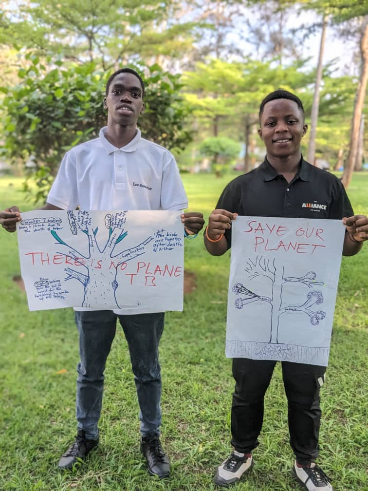

Youth Initiative in Climate Change (YICC) is a youth-led movement dedicated to advancing SDG 13: Climate Action in Rwanda. What began as a high school tree-planting project has evolved into a comprehensive initiative.
We equip young people with the knowledge and skills to implement both mitigation and adaptation strategies. Our mission is to empower Rwandan high school students and youth to become environmental leaders.
The urgency of climate change demands immediate action. Rising temperatures threaten ecosystems, livelihoods, and human survival— but we believe youth hold the potential to drive change.
Because there is no Planet B.
“To build a climate-resilient Rwanda led by empowered youth who champion innovative, inclusive, and sustainable solutions for a greener planet— because there is no Planet B.”
We believe in the potential of young people to lead change through platforms, tools, and opportunities.
We value creativity and forward-thinking solutions, encouraging bold innovation to solve complex issues.
Committed to protecting our natural environment through sustainable practices and responsible actions.
Working with diverse stakeholders to ensure climate action is inclusive, participatory, and united.
Acting with transparency and honesty, accountable to the communities we serve.
Focusing on long-term solutions that build resilience in communities and ecosystems.
Knowledge is power. We prioritize education to cultivate environmental consciousness.
We don’t just talk— we act. Leading by example and turning ideas into real-world change.
Despite increasing global youth engagement in climate action, many young people in Rwanda remain disconnected from these efforts due to a lack of education, resources, and platforms for engagement.
The United Nations recognizes young people as key stakeholders in sustainable development, and the 2030 Agenda emphasizes their role in advancing climate adaptation and mitigation strategies.
YICC was founded to bridge this gap and empower Rwandan youth to become proactive climate leaders in their communities— because youth are not just the future, they are the now.